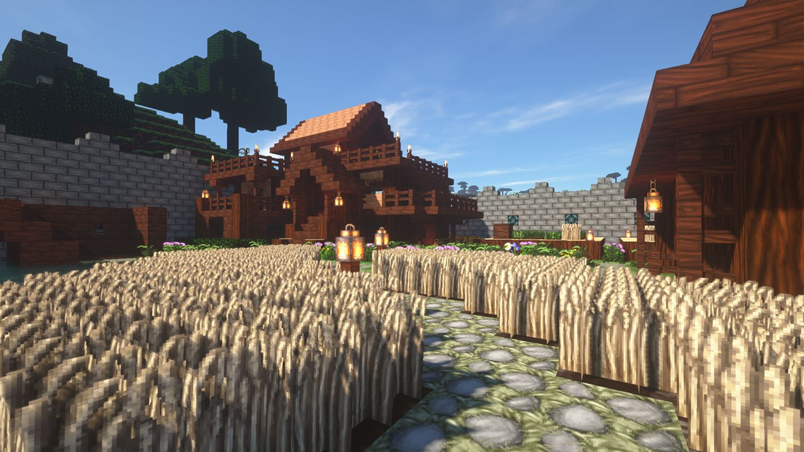

Usefulness of Resourcepacks¶
Resourcepacks on a server main seem hard to find a use for, however, when playing videos, it has a very good benefit. It allows user to hear audio while the media is playing. Unfortunately, Minecraft doesn’t allow any sound to be played for the user and it must be stored in a resourcepack in order to play it.
Resourcepack Status¶
In general, players have the option to accept or decline a resourcepack. If the resourcepack is accepted, the textures, sounds, and other customized objects will be downloaded to the client. However, if it is declined, they will not be downloaded. This means that in order for a user to hear sound, they must accept the resourcepack.
Playing Sounds in Resourcepacks¶
Suppose the user accepted the resourcepack. How would we no play the sound for the user? Well typically in-game players would have to use the
/playsound
command and specify which players to target to, the name of the sound, and whatever setting they want to use for the sound. We use a similar technique but in code in MinecraftMediaLibrary.
Throughout the library, we would name the sound under the plugin name in full lowercase with a sound named “audio”. This sound will be linked to an ogg which has the audio for a specific media. That way, it can be played for users easily.
This is how sound is played for users in the library. It utilizes the advantage of resourcepacks.